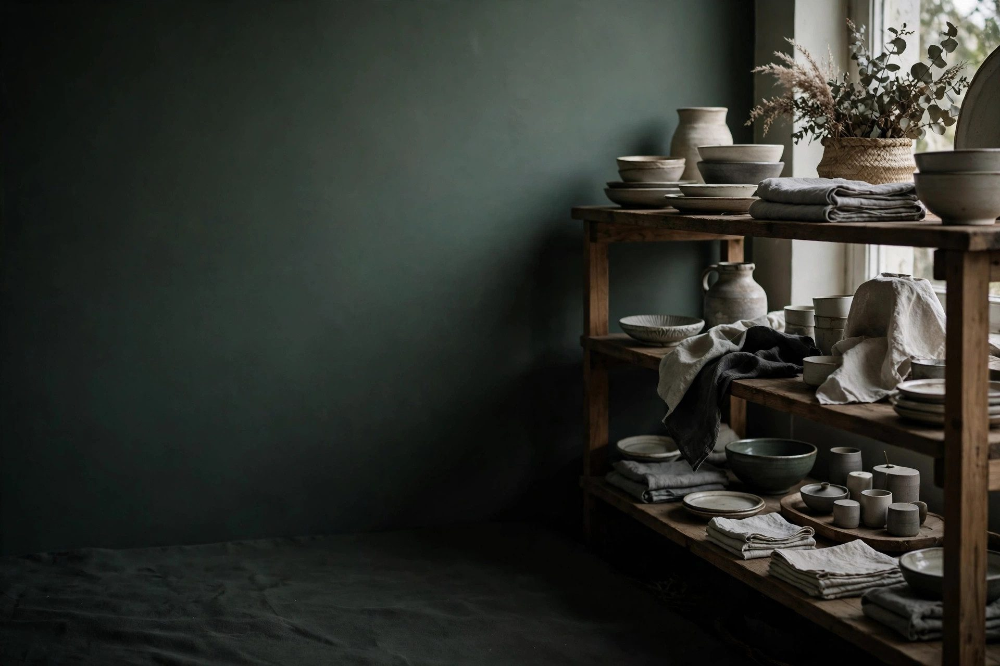
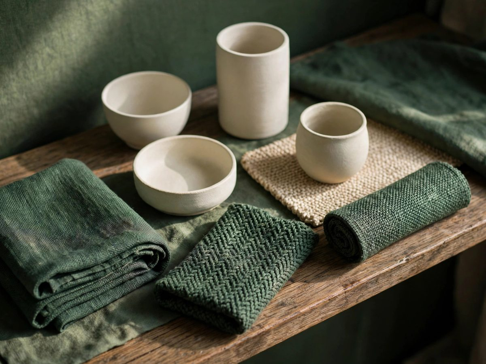
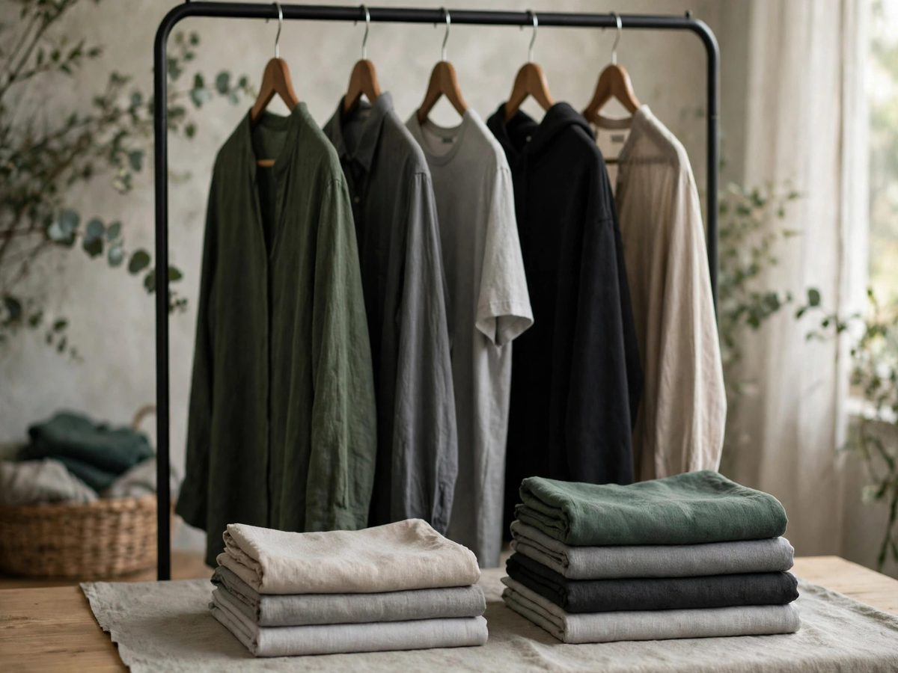
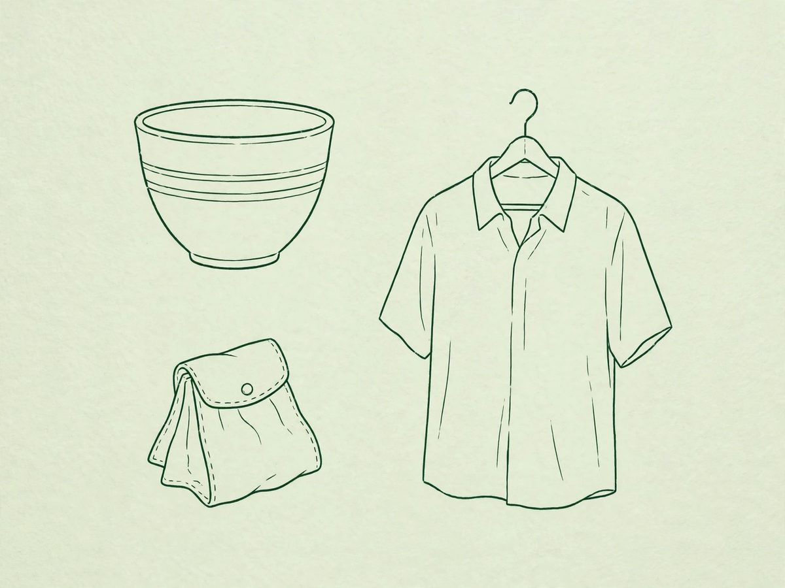

Interior
インテリア雑貨
部屋の中で楽しむインテリア雑貨を取り扱っています。

Zakka cork / Tomakomai
インテリア雑貨、キッチン雑貨、布小物。
洋服やファッション小物、ハンドメイド雑貨も取り扱っています。
About cork
zakka corkは、桜木町4丁目にある雑貨店です。インテリア雑貨やキッチン雑貨から、布小物、洋服、ファッション小物まで取り扱っています。
暮らしの中で使うもの、身につけるもの、ハンドメイドの雑貨。店内でご覧いただける品々を、カテゴリーごとにご紹介します。

Interior
部屋の中で楽しむインテリア雑貨を取り扱っています。
Kitchen
日々の食卓や台所で使うキッチン雑貨を取り扱っています。
Handmade
ハンドメイドの雑貨も品揃えの一つです。
Clothing & accessories

雑貨に加えて、洋服やファッション小物、布小物も取り扱っています。お探しのカテゴリーや気になる品については、お店へお尋ねください。
商品についてのお問い合わせは、下記の店舗窓口をご利用ください。
店舗の連絡先を見るBefore your visit

店舗は苫小牧市桜木町4-5-13にあります。ご来店の際の営業状況や商品の取り扱いについては、お電話でご確認ください。
このページはお店の取り扱いを紹介する提案デモです。商品の購入・お取り置きの受付窓口ではありません。
地図で所在地を見るInformation